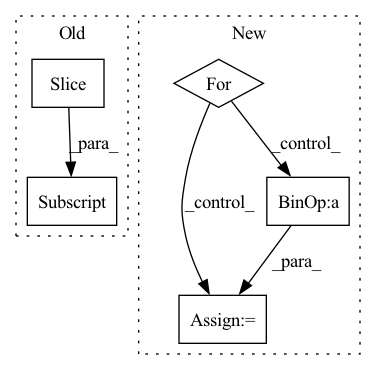

Pattern ID :9
Before Change
def forward(self, codes: torch.ByteTensor, shape: torch.IntTensor) -> torch.Tensor:
h, w = shape[0], shape[1]
return ((self._decoder(self._quantizer(codes)))[..., :h, :w] .tanh() + 1) / 2
After Change
def forward(self, codes: torch.ByteTensor) -> torch.Tensor:
smallQ = self._reverses[-1](self._quantizers[-1](codes[-1]))
for i in range(self._levels - 1, -1, -1):
q = self._scatters[i](self._quantizers[i](codes[i]))
smallQ = self._reverses[i](q + smallQ)
return self._decoder(smallQ).tanh()
In pattern: SUPERPATTERN
Frequency: 3
Non-data size: 5
Instances Fragment ID: 9920
Project Name: xiaosu-zhu/mcquic
Commit Name: 3ca26f40dc8d00ed5fbebee4a77654f9d1d51939
Time: 2021-10-08
Author: xiaosu.zhu@outlook.com
File Name: src/mcqc/evaluation/refModel.py
M Class Name: RefDecoder
N Class Name: RefDecoder
M Method Name: forward(2)
N Method Name: forward(3)
M Parent Class: nn.Module
N Parent Class: nn.Module
M File Name: src/mcqc/evaluation/refModel.py
N File Name: src/mcqc/evaluation/refModel.py
M Start Line: 135
M End Line: 137
N Start Line: 181
N End Line: 185
Before Change
x = self.embedding(x) // (batch_size, target_seq_len, d_model)
x *= math.sqrt(self.d_model)
x += self.pos_encoding[:, :seq_len, :]
x = self.dropout(x)
// Batch first = True in decoder
for i in range(self.num_layers):After Change
pos_enc_tgt = self.positional_encoding(tgt)
output = pos_enc_tgt
for i in range(self.num_layers):
normed_output = self.layer_norm(output)
output = output + self.dropout(
self.attention[i](normed_output, normed_output, normed_output, target_mask)
)
normed_output = self.layer_norm(output)
output = output + self.dropout(
self.source_attention[i](normed_output, memory, memory, source_mask)
)
normed_output = self.layer_norm(output)
output = output + self.dropout(self.position_feed_forward[i](normed_output))
return self.layer_norm(output) Fragment ID: 9922
Project Name: mindee/doctr
Commit Name: fddceba7bee5098b4219b7ba6a0bdf4f4a98adfe
Time: 2022-06-09
Author: felixdittrich92@gmail.com
File Name: doctr/models/recognition/transformer/pytorch.py
M Class Name: Decoder
N Class Name: Decoder
M Method Name: forward(5)
N Method Name: forward(5)
M Parent Class: nn.Module
N Parent Class: nn.Module
M File Name: doctr/models/recognition/transformer/pytorch.py
N File Name: doctr/models/recognition/transformer/pytorch.py
M Start Line: 74
M End Line: 91
N Start Line: 147
N End Line: 167
Before Change
seq_length = seg.size(1)
device = seg.device
emb = self.pe[: seq_length] .transpose(0, 1)
return emb.to(device)
After Change
no_pad_num = (src != 0).sum(dim=-1)
emb = torch.zeros(batch_size, seq_length, self.emb_size)
for i in range(batch_size):
emb[i, :no_pad_num[i], :] = self.emb[2: no_pad_num[i]+ 2]
return emb.to(device)
Fragment ID: 9909
Project Name: tencent/tencentpretrain
Commit Name: 2bc6d47065d7a5e6907d449cf5114248000274fe
Time: 2022-12-16
Author: 40569026+JINGZIjingzi@users.noreply.github.com
File Name: tencentpretrain/embeddings/sinusoidalpos_embedding.py
M Class Name: SinusoidalposEmbedding
N Class Name: SinusoidalposEmbedding
M Method Name: forward(3)
N Method Name: forward(3)
M Parent Class: nn.Module
N Parent Class: nn.Module
M File Name: tencentpretrain/embeddings/sinusoidalpos_embedding.py
N File Name: tencentpretrain/embeddings/sinusoidalpos_embedding.py
M Start Line: 45
M End Line: 47
N Start Line: 55
N End Line: 68
Before Change
def forward(self, codes: torch.ByteTensor, shape: torch.IntTensor) -> torch.Tensor:
h, w = shape[0], shape[1]
return ((self._decoder(self._quantizer(codes)))[..., :h, :w] .tanh() + 1) / 2
After Change
def forward(self, codes: torch.ByteTensor) -> torch.Tensor:
smallQ = self._reverses[-1](self._quantizers[-1](codes[-1]))
for i in range(self._levels - 1, -1, -1):
q = self._scatters[i](self._quantizers[i](codes[i]))
smallQ = self._reverses[i](q + smallQ)
return self._decoder(smallQ).tanh()
Fragment ID: 9917
Project Name: xiaosu-zhu/mcquic
Commit Name: 3ca26f40dc8d00ed5fbebee4a77654f9d1d51939
Time: 2021-10-08
Author: xiaosu.zhu@outlook.com
File Name: src/mcqc/evaluation/refModel.py
M Class Name: RefDecoder
N Class Name: RefDecoder
M Method Name: forward(2)
N Method Name: forward(3)
M Parent Class: nn.Module
N Parent Class: nn.Module
M File Name: src/mcqc/evaluation/refModel.py
N File Name: src/mcqc/evaluation/refModel.py
M Start Line: 135
M End Line: 137
N Start Line: 181
N End Line: 185